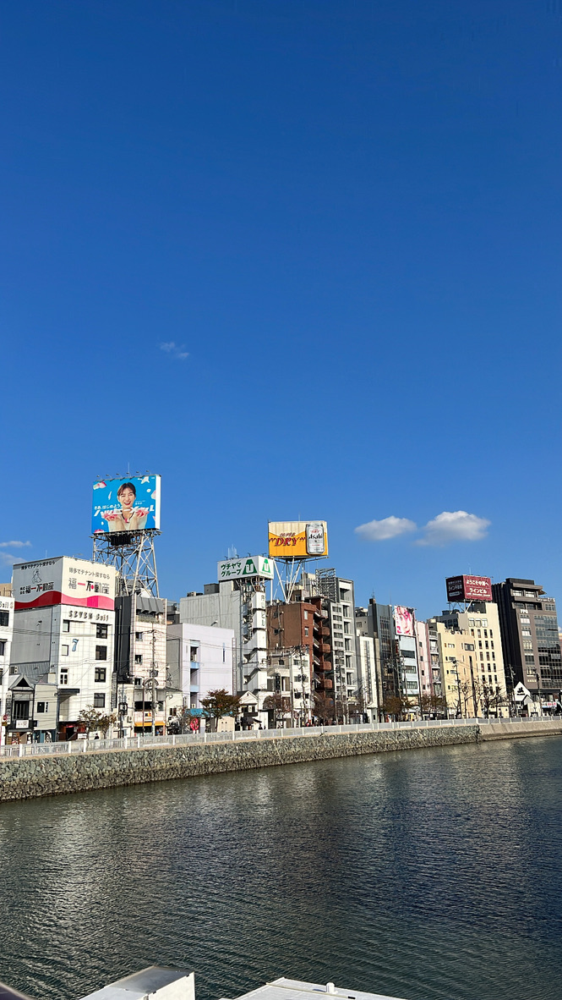

기억에 남는 여행지


안녕하세요, 저는 여행과 바다를 좋아하는 듀이에요. 다른 대륙보다는 동북 아시아 여행을 가장 좋아하는 편이에요. 국내 여행도 즐겨하고 일본, 대만, 중국 등을 많이 갔어요. 여행은 혼자 가는 것도 좋아하고, 마음이 맞는 친구와 함께 가는 것도 좋아합니다. 그리고 바다를 좋아하기 때문에 웬만하면 바다가 있는 여행지를 고르는 편이에요. 새로운 도전을 하는 것도 좋아해서 혼자 여행을 가거나 해외 여행지에서 렌트를 해서 운전을 한 경험도 있어요. 앞으로도 더 많은 곳을 여행하고 싶어요 ✈️

사운드 오브 뮤직은 어릴 때 함께 살았던 막내 고모가 추천해 준 영화입니다. 주인공인 마리아가 어려운 상황 속에서도 주체적인 삶을 살아가는 내용이 좋아서 여러 번 다시 본 인생 영화입니다. 영화에 등장하는 노래도 유명한데, 특히 영화를 보고 나면 도레미송이 머릿 속에서 계속 맴돌 수 있으니 주의해야 합니다. 알프스 산맥을 배경으로 한 아름다운 영상미도 이 영화의 큰 매력 중 하나입니다. 바다를 좋아하고 동북 아시아 여행을 주로 다니는 편이지만 이 영화를 보면 꼭 알프스 산맥에 가보고 싶다는 생각을 하게 됩니다.

쉬는 날 드라마 보는 것을 좋아하는데, 특히 타임리프물을 좋아합니다. 라이프 온 마스는 타임리프물 드라마 중에서도 가장 좋아하는 드라마입니다. 특히 주인공 정경호의 연기가 예술이고, 감독이 정경호를 빡세게 굴린 덕분에 그가 등장하지 않는 씬이 없을 정도로 재미있습니다. 정경호가 연기한 태주는 총격으로 2018년에서 1988년에서 깨어나게 되는데, 그 때 당시 서울의 모습도 신선하게 다가옵니다. 처음에는 2018년에서 온 자신이 이방인으로 느껴지지만 점점 1988년의 동료들과 함께 하고 즐거움을 찾아가는 태주의 모습이 인상적입니다. 2018년이든 1988년이든 태주가 행복하면 좋겠다고 생각합니다.